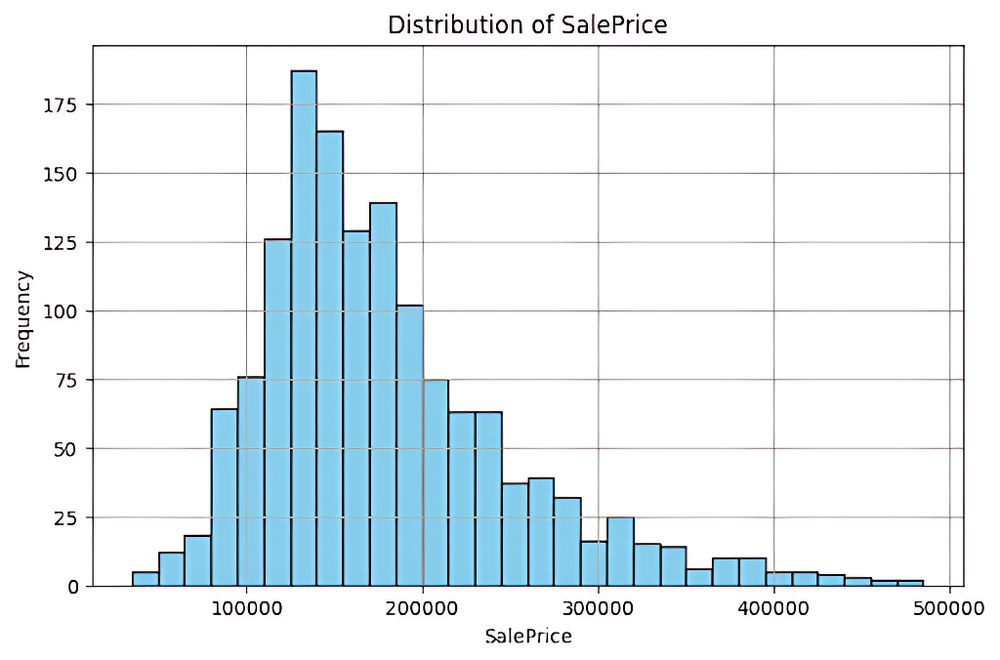
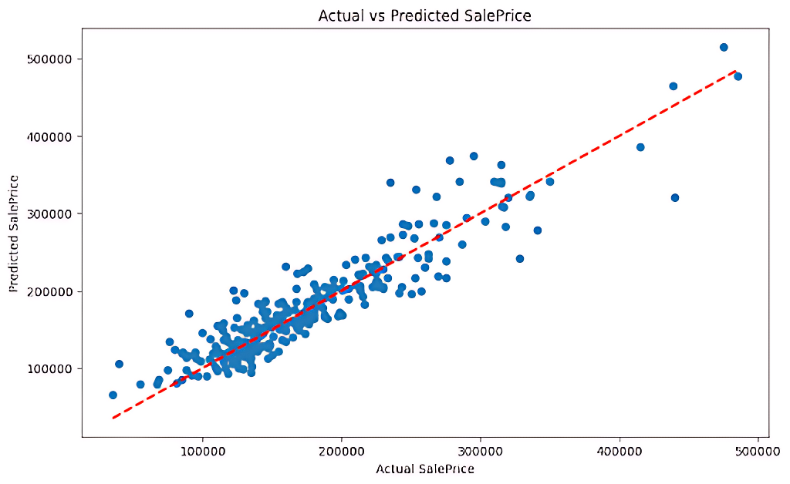
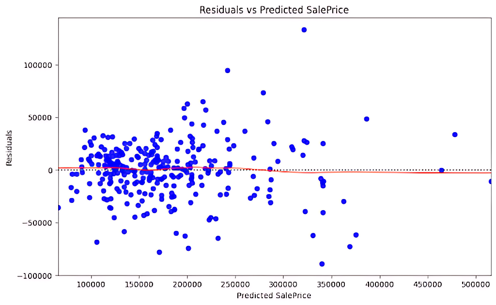

This document explains how to create a predictive model for housing prices. The model uses linear regression to estimate a house's sale price based on selected data features. Important steps include cleaning the data, modifying it, choosing useful features, and testing the model.
Loading the Dataset
The dataset was loaded using Pandas and contains housing data with various features. The raw data required significant preprocessing before being used for modeling:
import pandas as pd
import seaborn as sns
import matplotlib.pyplot as plt
import numpy as np
from sklearn.model_selection import train_test_split
from sklearn.linear_model import LinearRegression
from sklearn.metrics import mean_squared_error, r2_score
data = pd.read_csv('C:/Python Project/Predictive Model/train.csv')
Handling Missing Values
Missing values in the 'TotalBsmtSF' feature were filled with the median value to keep the data balanced and straightforward. This method provides a reliable way to handle missing data.
median_value = data['TotalBsmtSF'].median()
data['TotalBsmtSF'] = data['TotalBsmtSF'].fillna(median_value)
Outlier Removal
Outliers in key features like `GrLivArea` and `SalePrice` were removed to improve model performance. Thresholds were determined based on domain knowledge and data distribution
GrLivArea and SalePrice are outliers because they have very large or unusual values that are far from the rest of the data, which can affect the results of analysis and predictions.
data = data[data['GrLivArea'] < 4000] # Exclude extremely large living areas
data = data[data['SalePrice'] < 500000] # Exclude very high sale prices
Removing these outliers helps prevent them from disproportionately influencing the model, leading to more accurate predictions.
Histogram of SalePrice
The distribution of the `SalePrice` feature was visualized to examine skewness and identify the need for transformations:
plt.figure(figsize=(8, 5))
data['SalePrice'].hist(bins=30, color='skyblue', edgecolor='black')
plt.title('Distribution of SalePrice')
plt.xlabel('SalePrice')
plt.ylabel('Frequency')
plt.show()

The histogram revealed a right-skewed distribution, prompting a log transformation. The log function is used to make a skewed distribution more balanced because it reduces the impact of very large values
Log Transformation
We used a log function on the 'SalePrice' to even out the data and reduce imbalance. This helps the linear regression model work more accurately
data['LogSalePrice'] = np.log(data['SalePrice'])
Feature Selection
Relevant features were selected based on their correlation with the target variable. The chosen features include:
OverallQual: This reflects the quality of the house, which directly impacts its value. Higher-quality materials and finishes usually lead to a higher sale price
GrLivArea: The size of the living area is a key factor in determining a house's value. Larger living spaces are generally more desirable and command higher prices
GarageCars: The number of garage spaces affects convenience and utility, making it an important selling point. Houses with more garage space are typically valued higher
TotalBsmtSF: The basement area adds usable space, whether for storage, living, or recreation, contributing to the house's overall value
features = data[['OverallQual', 'GrLivArea', 'GarageCars', 'TotalBsmtSF']]
target = data['LogSalePrice']
Data Splitting
The dataset was split into training and testing sets using an 80-20 split. This ensures that the model is trained on one portion of the data and validated on unseen data:
X_train, X_test, y_train, y_test = train_test_split(features, target, test_size=0.2, random_state=42)
Model Training
A linear regression model was trained on the selected features and the log-transformed target variable:
model = LinearRegression()
model.fit(X_train, y_train)
Predictions
Predictions were made on the test set, and results were transformed back to the original scale for meaningful interpretation:
predictions = model.predict(X_test)
predictions_original_scale = np.exp(predictions)
Performance Metrics
The model was evaluated using:
Mean Squared Error (MSE):** Measures average squared difference between actual and predicted values.
R² Score:** Represents the proportion of variance explained by the model.
mse = mean_squared_error(np.exp(y_test), predictions_original_scale)
r2 = r2_score(np.exp(y_test), predictions_original_scale)
print(f'Mean Squared Error: {mse}')
print(f'R^2 Score: {r2}')
Actual vs Predicted Plot
This scatter plot compares predicted housing prices with actual prices. The red dashed line represents perfect predictions:
plt.figure(figsize=(10, 6))
plt.scatter(np.exp(y_test), predictions_original_scale)
plt.plot([np.exp(y_test).min(), np.exp(y_test).max()],
[np.exp(y_test).min(), np.exp(y_test).max()], '--r', lw=2)
plt.xlabel('Actual SalePrice')
plt.ylabel('Predicted SalePrice')
plt.title('Actual vs Predicted SalePrice')
plt.show()

Residual Plot
The residual plot evaluates the error consistency across predictions. A lowess line (red) is included to visualize trends:
plt.figure(figsize=(10, 6))
sns.residplot(
x=predictions_original_scale,
y=np.exp(y_test) - predictions_original_scale,
lowess=True,
color='blue',
line_kws={'color': 'red', 'lw': 1}
)
plt.xlabel('Predicted SalePrice')
plt.ylabel('Residuals')
plt.title('Residuals vs Predicted SalePrice')
plt.show()

Model Insights
The log transformation improved model accuracy by addressing skewness in `SalePrice`.
Outlier removal ensured that extreme values did not unduly influence predictions.
Residual Analysis
The residual plot indicates a slight heteroscedasticity issue, with errors increasing for higher-priced houses. This suggests that further feature engineering or alternative modeling approaches, such as ensemble methods, could improve performance.
Future Directions
Incorporate additional relevant features such as location-based variables.
Experiment with advanced models like Random Forest or Gradient Boosting.
Perform hyperparameter tuning to optimize the linear regression model further.
Conclusion
This model estimates housing prices using linear regression, focusing on key features like OverallQual, GrLivArea, GarageCars, and TotalBsmtSF. Careful data cleaning, transformation, and feature selection helped achieve strong predictive accuracy, making it a reliable tool for analyzing housing markets and refining further predictions.